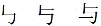
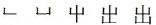
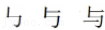
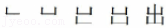
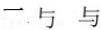
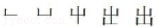
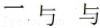
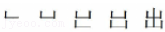

2016年北京市中考语文试题 · 基础选择题 第2题
2．（6分）今年是农历“猴年”。阅读下面的文字，完整（1）﹣（3）题。
生肖也叫属相，是代表十二地支而用来记人出生年份的十二种动物。十二属相之说在东汉时已有记载。在十二属相中，猴位列第九，即“申猴”。由于“猴”与“候”同音，人们就通过创作一只猴子骑在马背上的吉祥画、玉雕、木刻、剪纸等艺术作品寓意“马上封侯”。猴子的形象也常 出现在文学作品里，童话里有“猴子捞月”，寓言里有“朝三暮四”，．有关猴的成语也不少，如“猴年马月”“沐猴而冠”。可见，“猴”在我国文化领域留下了诸多痕迹。
（1）文中加点字的注音全都正确的一项是
A．生肖（xiāo） 记载（zǎi）
B．生肖（xiào） 记载（zǎi）
C．生肖（xiāo） 记载（zài）
D．生肖（xiào） 记载（zài）
（2）对文中划线字笔顺的判断，全都正确的一项是
A．“”与“字的笔顺是：

“出”字的笔顺是：
B．“与”字的笔顺是：

“出”字的笔顺是：
C．“与”字的笔顺是：

“出”字的笔顺是：
D．“与”字的笔顺是：

“出”字的笔顺是：
（3）根据语境，在文中横线处填入语句，最恰当的一项是
【甲】神话小说《西游记》中的“齐天大圣”孙悟空原本就是一只石猴
【乙】“齐天大圣”孙悟空原本就是神话小说《西游记》中的一只石猴
【丙】原本“齐天大圣”孙悟空就是神话小说《西游记》中的一只石猴。